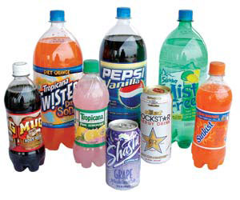

Many widely available soft drinks - including Hawaiian Punch, Diet Pepsi Twist, Sunny D, Kool-Aid Jammers and Country Time Lemonade - contain two ingredients that can form benzene, a carcinogen linked to leukemia and other cancers of the blood; nervous and immune system disorders; anemia and chromosome aberrations. Benzene is particularly toxic to children and those who have repeated exposure.
The U.S. Food and Drug Admin-istration (FDA) first learned of the hazard 16 years ago, when its researchers discovered that the interaction of benzoate preservatives and ascorbic acid (vitamin C) can form benzene. This interaction is exacerbated by prolonged storage under warm conditions, and the products most at risk are diet and sugar-free drinks.
Rather than advise a recall, the FDA entered into a private agreement with the largest beverage manufacturers, who agreed to “get the word out” to the rest of the industry. Some of the companies “fixed” the problem by adding sugar or chemicals called chelating agents, both of which can slow the formation of benzene.
But it seems many companies haven’t yet received word, since the two ingredients are still paired in a wide range of beverages all over the world. “There is no reason to add ascorbic acid to soft drinks,” says Glen Lawrence, a former science advisor for the FDA. “Those that have vitamin C naturally in them should not use sodium benzoate as a preservative. It is really very easy to avoid the problem.”
The FDA recently announced that it has again found benzene in some undisclosed beverages. Independent tests by other laboratories found benzene concentrations up to 10 times the federal limit for drinking water. (There is no allowable limit for beverages other than water, because the government assumes that people drink more water than anything else.)
The FDA maintains that the levels of benzene found recently are “not an imminent health hazard.” The Environmental Working Group (EWG), however, discovered that the FDA continued to test for benzene during the 1990s. Of the diet sodas tested, 79 percent contained levels above the federal limit for tap water.
Just weeks after the news about benzene resurfaced, the United Kingdom’s food safety officials began testing for benzene, and promptly removed some soft drinks from stores. Richard Wiles, EWG senior vice president, thinks the FDA should do the same: “Disclose the test results that taxpayers have paid for. Tell consumers which products contain high levels of benzene.”
To view a partial list of beverages that contain the two ingredients that can form benzene, visit the Environmental Working Group Web site.
|
 MATTHEW T. STALLBAUMER These beverages contain two ingredients that can interact to form benzene, a known carcinogen. To view a partial list of drinks that contain these ingredients, visit the Environmental Working Group Web site. |
|
|